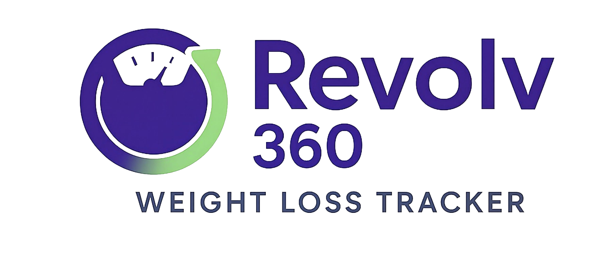
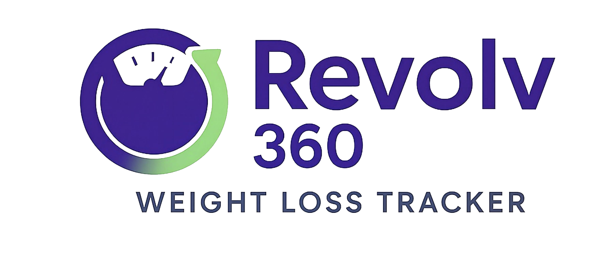

My Work
Revolv 360 Weight Loss Tracker
Revolv 360 is a mobile weight tracking app that lets users log daily weights, view their history, see progress badges, and enroll in motivational alerts when they reach their goals.
- HTML
- CSS
- JavaScript
- Android Studio

Enhancement One: Software Engineering and Design
For my first enhancement, I improved the software engineering and design aspects of my Android Weight Tracker application by implementing a full dark mode toggle. The original version of the app used a single static theme, which limited user accessibility and did not reflect modern design standards. To address this, I created a dynamic theme system that allows users to switch between light mode and dark mode, with the entire interface updating instantly based on the selected preference. This enhancement required restructuring several UI components, adjusting color resources, updating composables to support theme states, and ensuring that all screens including the add weight screen and the alerts screen responded correctly to theme changes.
Completing this enhancement allowed me to demonstrate strong skills in software design, UI architecture, and state management within Android development. I worked with theme layers, color palettes, and Material Design principles to ensure visual consistency across the app. I also integrated persistent user settings, allowing the selected theme to remain active even after the application is closed. This required careful planning and refactoring, since multiple screens needed to share logic and respond to a unified theme state without breaking existing functionality. Implementing a system wide dark mode showed my ability to coordinate UI elements, maintain clean design patterns, and improve user experience through thoughtful interface customization.
This enhancement aligns with the course outcomes focused on applying software engineering principles and designing computing solutions using industry standard techniques. By adding a dynamic theme system, I demonstrated the ability to structure software for long term maintainability, improve usability, and incorporate modern design features that enhance accessibility. The dark mode toggle reflects my ability to modify an existing project using well founded engineering practices, improving both the visual design and the underlying architecture of the application. It also illustrates my growth as a front end developer who can blend technical implementation with user centered design.
Enhancement Two: Algorithms and Data Structures
For my second enhancement, I expanded the functionality of my Android Weight Tracker application by implementing a weekly weight change badge. The original app allowed users to enter, edit, and delete weight entries, but it did not provide immediate feedback or analysis based on the data the user provided. To improve the experience, I created a feature that calculates the user’s weight difference over the past seven days and displays a badge that reflects their progress. This enhancement required designing the logic to identify the correct date range, retrieve the appropriate data, compute the weekly change, and update the badge automatically whenever new entries were added or modified.
Developing this feature allowed me to demonstrate my understanding of algorithms and data structures within a real application. I improved the way the app stores and processes weight entries by using cleaner data handling methods and more efficient calculations. Creating the badge required careful control of lists, indexing, conditional checks, and data validation to ensure the results were accurate. I also refined the update logic so that the badge refreshes properly when entries change, which strengthened the connection between the user interface and the underlying data management. Working through these steps helped me apply algorithmic thinking, improve the internal structure of my app, and ensure that the badge feature is both reliable and responsive.
This enhancement aligns with the course outcomes that focus on applying algorithmic strategies and selecting appropriate data structures to solve computing problems. By designing a calculation process that evaluates user data, identifies patterns, and presents feedback in a meaningful way, I demonstrated my ability to create efficient logic that enhances the functionality of the application. The weekly weight change badge shows how well constructed algorithms can support user goals and improve the overall value of a software system. This enhancement also reflects my growth as a developer who can integrate practical data processing techniques into user centered features.
Enhancement Three: Databases
For this milestone, I focused on improving the database portion of my weight tracking application by adding support for storing notes alongside each weight entry. The original version of the app only saved a single value for each day, which was the user’s weight. There was no way to include additional information such as how the user was feeling, what they ate, or what might have affected their progress. As a result, the data did not tell the full story of the user’s journey. I created the updated notes feature to give the database structure more depth and to make the stored information more meaningful.
The enhancement required me to modify the data model and update how entries were created, stored, and retrieved. I added a notes field to the WeightEntry data class and updated the logic that manages weight entries so the notes would be saved and displayed correctly. This meant rewriting parts of the code responsible for adding new entries, editing existing entries, and loading them into the user interface. Before this change, the app only saved one simple value for each day. Now it organizes multiple pieces of related information for each entry, which gives the app a more realistic data structure and shows that I can work with richer, more complex persistent data.
This enhancement aligns with the course outcomes related to designing, implementing, and managing data storage solutions that support application requirements. By expanding the database structure and ensuring that the notes are reliably stored and retrieved, I demonstrated my ability to maintain data integrity while evolving an existing system. I also showed that I can trace how information flows from user input through the data model and back into the user interface. The notes feature strengthens the overall usefulness of the application and highlights my ability to extend database driven components in a thoughtful, maintainable way.
Clients
 


About Me
My name is Johnny Jones, and I am a software engineer based in Charlotte, North Carolina. I recently earned my Bachelor of Science in Computer Science with a concentration in Software Engineering from Southern New Hampshire University. My journey into tech is rooted in more than a decade of creative problem-solving as a freelance graphic designer, where I spent over 10 years bringing ideas to life through digital art, branding, and visual storytelling.
That creative background now fuels my approach to software development. I enjoy building clean, user-focused applications and combining design thinking with technical skills to create meaningful digital experiences. I am passionate about continuous learning, front-end development, and using technology as a tool to build, improve, and innovate.
As I transition into the tech industry, I aim to blend creativity and engineering to develop modern applications that are functional, intuitive, and visually engaging.
My Resume